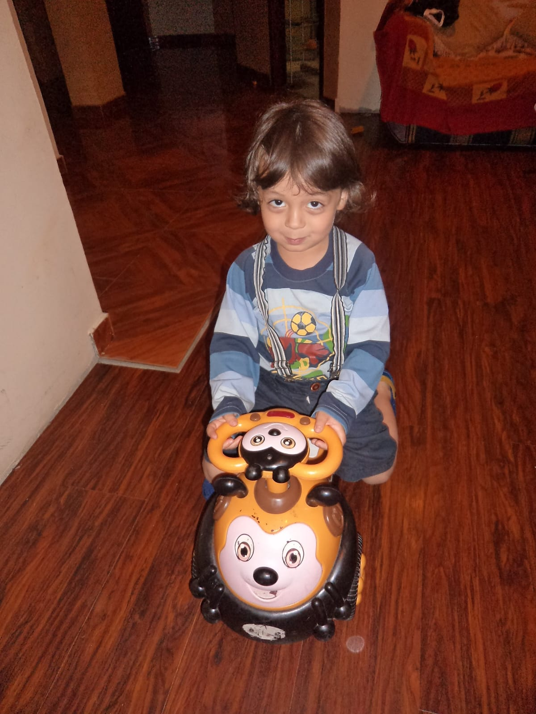
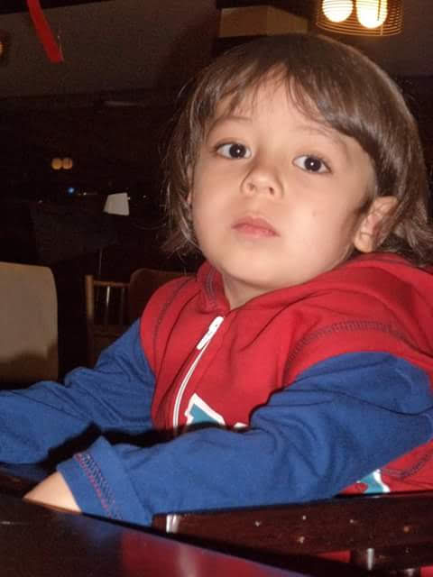

Enfoque en usuario
Busco crear sistemas que aporten valor y mejoren la experiencia final.
TonyDev Anthony Paredes
TonyDev | Portafolio Junior
Tengo 13 años y me enfoco en construir experiencias web orientadas al usuario. Mi base principal es Python (incluyendo POO) y actualmente estoy consolidando frontend para avanzar después hacia backend con Python. También estoy desarrollando Empire of Luck, un juego de Roblox inspirado en Grow a Garden, con imperios, bots de IA de ayuda, lógica de IA y aprendizaje constante de Luau y Lua.
Me interesa desarrollar sistemas que aporten valor real, mejoren procesos y conviertan ideas en software funcional. Aprendo construyendo proyectos practicos y mejorando con feedback.
Tengo un interes muy fuerte en inteligencia artificial y quiero integrarla en sistemas utiles, asistentes y herramientas que mejoren la experiencia de usuario.
Disponible para colaboraciones, proyectos de aprendizaje y retos de desarrollo web.

Soy un desarrollador junior en formacion con enfoque practico. Me interesa construir software util, comprender la logica de los sistemas y transformarla en experiencias claras para el usuario. Aprendo rapido, experimento con proyectos reales y mantengo un interes fuerte en IA aplicada.
Busco crear sistemas que aporten valor y mejoren la experiencia final.
Aprendo rapido por cuenta propia y consolido conocimientos construyendo proyectos.
Quiero integrar inteligencia artificial en herramientas y productos utiles.
Me gusta pensar en la logica completa: frontend, backend y funcionamiento real.
Resumen de enfoque, interes tecnico y ruta de crecimiento como desarrollador.
Crear software y sistemas que mejoren la experiencia del usuario y resuelvan necesidades reales.
Me interesa demasiado la inteligencia artificial y su aplicacion practica en productos reales.
Fortalecer frontend, pasar a backend con Python y construir APIs y microservicios.
Vista por areas para mostrar en que tecnologias me estoy fortaleciendo.
Logica, funciones, estructuras, POO y resolucion de problemas.
DOM, eventos, localStorage, animaciones y logica de interaccion.
Estructura, responsive, componentes visuales y efectos.
Creacion de paginas con identidad visual y animaciones con intencion.
Control de versiones, repositorios y preparacion para publicar proyectos.
API simple para chatbot y conexion frontend-backend.
Integracion de IA en chatbot para consultas y exploracion de casos de uso reales.
Creacion de juegos en Roblox Studio, sistemas de imperios, bots de ayuda con IA y logica de juego separada entre backend y frontend.
Tecnologias que mas me interesan para construir sistemas reales, con Python como prioridad.
Mi lenguaje base para logica, backend, APIs y futuras arquitecturas con microservicios.
Ruta de backend que quiero fortalecer para crear servicios y APIs utiles.
Base actual para interfaces, experiencia de usuario y productos interactivos.
Interes fuerte en integrar IA en asistentes, automatizacion y herramientas practicas.
Ruta actual para crear Empire of Luck con sistemas de juego, imperios, bots de IA y logica separada entre backend y frontend.
Juego Roblox en desarrollo
Empire of Luck es mi juego de Roblox inspirado en Grow a Garden, pero llevado a una experiencia de imperios, progreso y suerte. El jugador construye su camino, mejora su imperio y recibe apoyo de bots de IA pensados para guiar, asistir y hacer que la experiencia se sienta mas viva.
Una idea de juego basada en crecimiento, construccion y evolucion del jugador dentro de su propio imperio.
Asistentes dentro del juego pensados para ayudar, orientar y mejorar la experiencia del jugador.
Proyecto actual para aprender Roblox Studio, Luau/Lua y logica de gameplay con sistemas mas organizados.
Estoy dividiendo el juego en partes para ordenar mejor la logica, la interfaz y los sistemas que hacen funcionar la experiencia.
Proyectos que reflejan mi avance en logica, frontend, Roblox e integracion con IA.
Proyecto destacado
Consultas sobre un sistema de boleteria con backend en Python.
Desarrolle un prototipo de chatbot que responde preguntas sobre un sistema de boleteria. Integre frontend, backend con Flask y consumo de IA para responder dudas del usuario. Este proyecto fue clave para comprender una arquitectura basica cliente-servidor y reforzo mi interes por la inteligencia artificial aplicada.
Python, Flask, rutas, manejo de peticiones y respuestas JSON.
HTML, CSS y JavaScript para interfaz de chat e interaccion.
Aprendizaje clave: Integracion frontend-backend con Flask y estructura inicial de un flujo de chat con IA.
Que mejoraria: Manejo de errores, validaciones del backend y una interfaz de chat mas robusta.
Pagina con animaciones, musica, mini juego, corazones, confeti y flujo interactivo.
Aprendizaje clave: Logica de interaccion en JavaScript, animaciones y manejo de estado en el navegador.
Que mejoraria: Separar mejor la logica en modulos y optimizar mas la experiencia movil.

Rediseño profesional de mi pagina de presentacion con secciones, filtros y animaciones.
Aprendizaje clave: Jerarquia visual, presentacion profesional y mejor organizacion del contenido tecnico.
Que mejoraria: Agregar demos en vivo por proyecto y enlaces especificos para cada repositorio.
Juego de Roblox inspirado en Grow a Garden, pero llevado a un sistema de imperios donde bots de IA ayudan al jugador. Estoy aprendiendo Luau y Lua mientras separo la logica del juego entre backend y frontend.
Aprendizaje clave: Organizar sistemas de juego, crear logica de IA y pensar el gameplay como una experiencia escalable.
Que mejoraria: Pulir mecanicas, balancear los imperios y terminar una version jugable en un plazo estimado de 2 a 3 meses.
Resumen de como he ido avanzando en mi ruta tecnica.
Inicio
Fortaleci bases de programacion, funciones, estructuras y POO.
Frontend
Desarrolle interfaces, animaciones e interacciones con enfoque en usuario.
Integracion
Integre Flask y un chatbot con IA para resolver preguntas de un sistema.
Siguiente etapa
Objetivo de crecimiento para construir sistemas mas completos y escalables.
Proyecto actual
Estoy creando un juego de imperios con bots de IA, aprendiendo Luau/Lua y dividiendo la logica entre backend y frontend.
En progreso
Estoy enfocado en Empire of Luck, un juego de Roblox inspirado en Grow a Garden pero con imperios y bots de IA ayudando al jugador. Lo estoy construyendo con Luau/Lua, separando backend y frontend, y estimo tener una version lista en maximo 2 o 3 meses.
Proceso que sigo para construir proyectos y mejorar resultados.
Defino que necesita el usuario y que resultado debe obtener.
Construyo una version funcional para validar idea e interaccion.
Reviso errores, mejoro detalles y simplifico la experiencia.
Anado funciones, organizo mejor el codigo y subo el nivel tecnico.
Mi plan es seguir fortaleciendo frontend mientras avanzo a backend con Python para construir APIs y, posteriormente, microservicios pequenos. Mi enfoque principal es crear software util para usuarios e integrar IA en soluciones practicas.